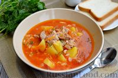
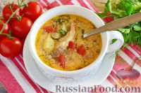

Мы собрали для вас самые вкусные и легкие для приготовления рецепты
Суп «Харчо»
Суп харчо, рецепт с курицей. Вкусный, ароматный, острый. Вообще-то это суп из говядины, но грузины довольно часто готовят суп харчо и из курицы.
Роллы "Филадельфия"
Готовим дома самые вкусные суши-роллы. Популярные и любимые всеми роллы "Филадельфия" с легкостью можно приготовить в домашних условиях.
Жюльен из курицы с грибами
Одной из самых популярных горячих закусок является жульен (точнее жюльен) с грибами.
Первые Блюда
Суп «Харчо»
Суп харчо, рецепт с курицей. Вкусный, ароматный, острый. Вообще-то это суп из говядины, но грузины довольно часто готовят суп харчо и из курицы.

Томатный суп со свининой и рисом
Вкусный и сытный томатный суп с рисом и свининой - отличный вариант накормить большую семью. Если сварить свинину заранее, то на приготовление супа вы потратите не более 20 минут.

Любимый суп
Вкусный куриный суп с помидорами и сметаной готовится из доступных продуктов, а результат потрясающий.
Вторые блюда
Хачапури по-аджарски
Давно ходил вокруг рецепта хачапури по-аджарски, не решался. Сегодня попробовал - я в полном восторге! Тесто замечательное, интересный процесс приготовления, а вкус - не передать, просто сказка!
Домашние сырные палочки
Простой, но очень вкусный рецепт домашних сырных палочек. Пальчики оближешь! Минимум продуктов и максимум удовольствия, а с приготовлением справится даже ребёнок.
Помидоры по-итальянски
Помидоры по-итальянски - отличное блюдо для неожиданных гостей.